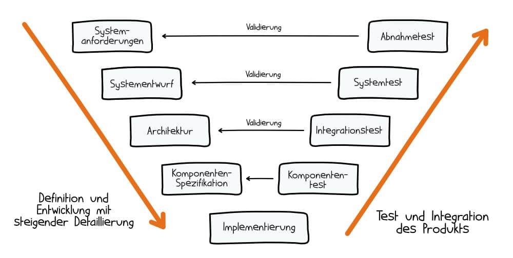

Ein lineares Vorgehensmodell für die Softwareentwicklung, bei dem jeder Phase der Entwicklung eine passende Testphase zugeordnet ist - visuell dargestellt wie ein V.
Weil klare Abläufe, nachvollziehbare Dokus und zufriedene Auftraggeber kein Zufall sind - sondern oft Ergebnis eines durchdachten Modells wie diesem.
| Entwicklung | Validierung |
|---|---|
| Systemanforderungen | Abnahmetest |
| Systementwurf | Systemtest |
| Architektur | Integrationstest |
| Komponentenspezifikation | Komponententest |
| Implementierung | |
| Vorteile | Nachteile |
|---|---|
| unvollständige Spezifikationen werden in einem frühen Stadium erkannt | fordert eine sehr ausführliche Dokumentation auf allen Ebenen |
| Das Modell ist insgesamt einfach aufgebaut und benötigt wenig Schulung für alle Beteiligten. | lineares Vorgehen ist starr und wenig flexibel |
| während der Entwicklung vergleichsweise wenig Kommunikation zwischen Entwicklern und Kunde nötig | vereinfacht den Prozess der Software-Entwicklung zu stark |
| Teammitglieder, die für das Testen verantwortlich sind, werden bereits in frühen Projektphasen eingebunden | ähnliche Nachteile wie im Wasserfallmodell |
| Testabdeckung ist hoch |